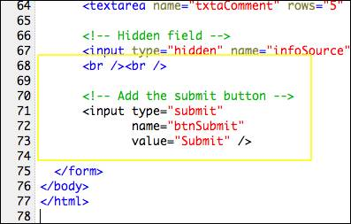
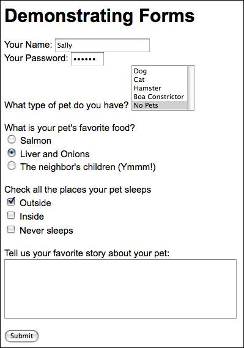

Buttons (btn)
There are three types of buttons, submit, reset, and the plain ordinary old button. Which one is determined by the attribute type=" " which can have values of "submit", "reset", or "button".
type="submit" The submit button collects the information from the form and sends it to the server.
type="reset" The reset button clears all the input from the form and returns the objects to their default values if there are any. This is being used less and less because most often users simply go to the field that needs editing and make the fix. They rarely (if ever) want to start over and retype everything.
type="button" The button button can be used to get an action from the user and is usually connected with a JavaScript function. One example would be a button that would turn off the music on a web page. As soon as the user clicked the button, a short JavaScript function runs that toggles the sound off or on.
value=" " The value attribute will display on the face of the button.
Add a submit button to your demonstration form:

Here's what the finished form will look like:
